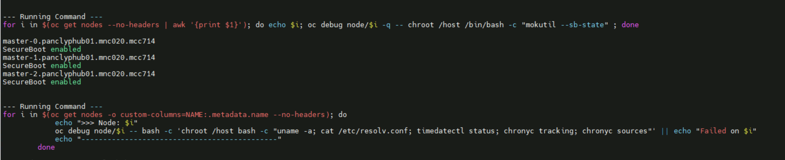

OpenShift & Quay healthcheck - Runbook¶
This runbook describes how to run the OpenShift & Quay healthcheck script in three modes:
- Hub cluster healthcheck (
--hub) - Spoke cluster healthcheck (
--spoke) - Quay infrastructure health (
--infra-quay)
The script prints each command before executing it and streams outputs/errs to the console.
Prerequisites¶
- Python 3.6+ (check with
python3 --version) ocCLI installed and logged in to the target OpenShift cluster for--hubor--spokemodes- Verify login:
oc whoami podman,curl,ss,ncavailable on the host for--infra-quaymode- The Python script file saved locally (example name:
ocp_health_check.py) containing the latest version shared in this project: - Supports flags:
--hub,--spoke,--infra-quay --huband--spokeare mutually exclusive (cannot be used together)
If your Quay registry is not bound to
https://localhost:8443, update the Quay endpoints inside the script to match your host/port. (NCP 24.7.MPX and 25.4 MPX platform can be ignored this step.)
Download the script¶
Version-04 [Latest]¶
Version-03¶
Version-02¶
Version-01¶
Quick Start¶
From the directory where ocp_health_check.py is saved:
# Show usage (no flags)
python3 ocp_health_check.py
# Run hub healthcheck
python3 ocp_health_check.py --hub
# Run spoke healthcheck
python3 ocp_health_check.py --spoke
# Run Quay infra checks
python3 ocp_health_check.py --infra-quay
If no flags are provided, the script prints usage and exits with a non‑zero code.
What each mode does¶
--hub (Hub Cluster healthcheck)¶
Runs cluster‑wide healthcheck useful on a hub/management cluster. Examples include:
- Cluster version & node inventory
- Bare Metal Hosts, Machines, MCP, ClusterOperators, Components
- Workload inventory (pods/deployments/statefulsets/daemonsets)
- Readiness endpoints and etcd status
- Network operator configuration (serviceNetwork/clusterNetwork)
- OperatorHub/catalog sources & marketplace components
- Image registry & Multus presence
- Node labels and hugepages capacity
- NMState operators and policies
- Ceph (Rook) health (
ceph -s, OSD tree)
Example invocation:
python3 ocp_health_check.py --hub
Note:
--hubautomatically includes a small base set of commands (oc whoami --show-server,oc get clusterversion,oc get nodes -o wide).
--spoke (Spoke/Workload Cluster healthcheck)¶
Focuses on data‑plane/workload validations. Examples include:
- Cluster version & node inventory
- Bare Metal Hosts, Machines, MCP, ClusterOperators, Components
- Workload inventory (pods/deployments/statefulsets/daemonsets)
- Readiness endpoints and etcd status
- Network operator configuration (serviceNetwork/clusterNetwork)
- OperatorHub/catalog sources & marketplace components
- Image registry & Multus presence
- Node labels and hugepages capacity
- NMState / SR‑IOV operators and policies
- MetalLB status (controller/speaker, FRR configuration, BFD peers)
- OpenShift Logging / NumaResources pods visibility
- Ceph (Rook) health (
ceph -s, OSD tree)
Example invocation:
python3 ocp_health_check.py --spoke
Tip: These commands may produce large outputs. Consider redirecting to a file:
bash python3 ocp_health_check.py --spoke | tee spoke_diag_$(date +%F_%H%M).log
--infra-quay (Quay Infrastructure Health)¶
Validates a local Red Hat Quay deployment listening on https://localhost:8443:
- Health endpoints:
/health/instance,/health/ready,/health/live - API discovery:
/api/v1/discovery - Container logs tail:
quay-app,quay-postgres,quay-redis - Port binding check (8443)
- App → DB/Redis connectivity via
ncfrom insidequay-app
Example invocation:
python3 ocp_health_check.py --infra-quay
You can combine with a cluster mode:
python3 ocp_health_check.py --hub --infra-quay
python3 ocp_health_check.py --spoke --infra-quay
Usage & Help¶
Running the script without arguments prints a help/usage block with examples and exits.
Usage: python ocp_health_check.py [OPTIONS]
Options:
--hub Run healthcheck for hub cluster (mutually exclusive with --spoke)
--spoke Run healthcheck for spoke cluster (mutually exclusive with --hub)
--infra-quay Run healthcheck for Quay infrastructure (can be combined with --hub or --spoke)
Examples:
python ocp_health_check.py --hub
python ocp_health_check.py --spoke
python ocp_health_check.py --infra-quay
python ocp_health_check.py --hub --infra-quay
python ocp_health_check.py --spoke --infra-quay
Capturing Output¶
For long runs or later analysis, redirect output to a timestamped file:
python3 ocp_health_check.py --hub --infra-quay | tee hub_$(date +%F_%H%M).log
To save only errors:
python3 ocp_health_check.py --spoke 1> /tmp/spoke.out 2> /tmp/spoke.err
This script output should be shared as part of exit criteria package. also, infra-quay, hub, spoke cluster should be having separate files.
Common Troubleshooting¶
Script get hung for couple of tasks¶
Following task required to be executed inside the nodes OS level. so it will take some extra time.

Quay health endpoints fail (non‑200 or timeouts)¶
- Ensure Quay is running and listening:
bash podman ps ss -lntp | grep 8443 - Check logs:
bash podman logs quay-app | tail -n 100 podman logs quay-postgres | tail -n 100 podman logs quay-redis | tail -n 100 - Validate app → DB/Redis connectivity inside container:
bash podman exec -it quay-app bash -c "nc -zv quay-postgres 5432" podman exec -it quay-app bash -c "nc -zv quay-redis 6379"
oc commands fail¶
- Verify kubeconfig/permissions:
bash oc whoami oc get clusterversion - Confirm network reachability and that your token hasn’t expired.
MetalLB FRR exec fails¶
- Ensure
metallb-systemnamespace exists and at least onespeakerpod is Running:bash oc get pods -n metallb-system -o wide
Ceph checks fail¶
- Ensure Rook operator pod exists and is Running in
openshift-storage:bash oc get pods -n openshift-storage -l app=rook-ceph-operator
End of Runbook